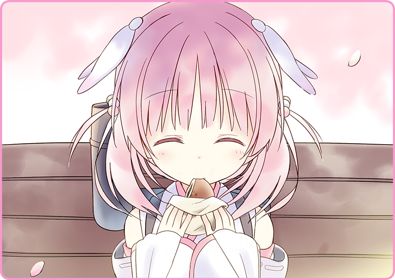

Chiếc bánh mềm mại, ấm áp tựa như Mặt Trời vậy.
Nếu giương lên bầu trời xanh, trông nó sẽ thật thần thánh tựa hồ ánh sáng đang phát ra từ lớp vỏ màu vàng óng kia. Chiếc anpan trước mặt tôi đã bị xé làm đôi nên nó không hẳn là tròn trịa, nhưng ba cái chuyện vặt để ý làm gì. Trường hợp này có lẽ dùng câu “nhắm mắt làm ngơ” là hợp nhất.
“Chúc ngon miệng!”
Tôi há thật to và cắn một nửa chiếc anpan nọ.
Vỏ bánh mỏng đến khó tin, nhưng vẫn có thể khẳng định chắc chắn là nó được làm từ bột mì.
Và cả phần nhân của Mặt Trời là mứt đậu đỏ cũng đã khẳng định được vị thế của mình và trượt xuống cổ họng tôi như thể rơi tự do.
Ngon quá.
Ngon đến phát khóc luôn.
Cầm trên tay chiếc anpan ăn dở, tôi thốt lên một tiếng cảm thán.
Con kênh chảy quanh tòa lâu đài Yamanote, còn chúng tôi thì đang ngồi trên một chiếc ghế nhỏ nhìn xuống mặt nước.
Sau lưng chúng tôi là một hàng anh đào đương độ mãn khai.
Trên phố, một chiếc xe điện màu xanh thẫm bấm chuông hai lần, lướt đi thật nhanh.
“Haizakura, em không ăn à?”
Em giật mình, khẽ rung rinh mái tóc màu anh đào và nâng giọng lên một cách cường điệu.
“Ngon lắm đó. Nào, không cần phải ngại.”

Em há khuôn miệng nhỏ xinh to nhất có thể.
Rồi cắn lấy chiếc anpan.
“Ăn xong rồi hẵng nói chứ.”
“Với cả đậu đỏ dính hết lên má rồi này.”
“Oái, bộ kimono đẹp vậy, đừng có dùng ống tay áo để lau chứ…”
“T-Thế hả… vậy là tốt rồi.”
Haizakura cao giọng, dù mứt đậu đỏ vẫn còn vương trên má em.
“Xem chừng Hình nhân cũng ăn anpan được nhỉ.”
Đôi mắt to tròn màu lưu ly của em nhìn thẳng về phía tôi.
“À không, có hỏi tôi thì… Bình thường em hay ăn cái gì?”
Em ưỡn ngực đầy tự tin và giải thích.
Hẳn vì đây là chuyện quan trọng nên em mới nhớ rõ thế.
“Đáng tiếc là không.”
“Từ đầu thì bánh là vật rắn mà.”
Em lẩm bẩm gì đó trong lúc nhìn phần còn lại của chiếc anpan đầy tiếc nuối.
“Nói cách khác, cứ cho vào bụng rồi thì cái gì cũng như nhau cả thôi.”
“A, ăn rồi.”
Em cắn một miếng thật lớn.
Những đợt khói bắt đầu phun ra từ ống khói cắm trên chiếc cặp em đang đeo.
Chúng có mùi ngòn ngọt tựa như caramel.
Cô bé nhìn chằm chằm vào tôi.
Em nghiêng đầu trầm tư một hồi, cơ hồ tìm cách để gọi tôi.
“... Tôi tên là Usami. Rất vui được gặp em.”
“Cảm ơn em. Ở chỗ làm trước người ta hay gọi tôi là Usa-san lắm.”
“Tất nhiên, không sao cả.”
“Ừ, nãy tôi cũng nghe rồi.”
“Ừm, nhìn em đúng là có cảm giác ấy thật.”
“Hồi bé tôi từng sống trên Đại lục. Lúc ấy còn đang là thời chiến nên có nhiều Hình nhân lắm, thành ra…”
“Tôi cũng có kha khá bạn là Hình nhân.”
Chúng tôi cứ vừa ăn anpan vừa tán dóc như vậy.
Dưới bầu trời xuân trong xanh này, thời gian cứ thế hờ hững trôi.
Không hiểu sao mà tôi cảm thấy thật bồi hồi.
“Nhân tiện…”
Khi đã hơi lưng bụng rồi, tôi hỏi em một điều vốn đã để ý từ nãy giờ.
“Haizakura làm trong tiệm bánh hả?”
Em nghiêng đầu ngây ngô.
“Thì đấy, em bán anpan còn gì.”
Xem chừng em có một nguyên nhân sâu xa nào đó.
Tôi chỉnh lại tư thế ngồi và sẵn sàng nghe em kể chuyện.
Có khi nào em đã từng phải sống một cuộc đời bảy nổi ba chìm nào đó trước khi tới đây chăng?

 “Hà…”
“Hà…”